Hola y bienvenidos a todos los lectores.
Como todos los años participo de Ekoparty Conference e intento absorber lo mas que pueda en conocimiento de los speaker y de personas que voy conociendo en el camino. Por esta razón, muchas veces me pierdo de divertidos retos y termino resolviéndolos después de tiempo.
Perdiendo la oportunidad de algún tipo de recompensa jeje. Pero bueno lo importante es resolverlo, aun así, se gana experiencia.
Entonces para ya comenzar con lo importante que es resolver el reto de este año, primero pasaremos por los requisitos impuestos por Blue Frost Security Labs en Ekoparty 2022.
Requisitos:
1. Solo se aceptarán soluciones de Python sin bibliotecas externas
2. El objetivo es ejecutar la Calculadora de Windows (calc.exe)
3. La solución debería funcionar en Windows 10 o Windows 11
4. La continuación del proceso es deseable (no obligatoria)
Descarga de la aplicación:
https://static.bluefrostsecurity.de/files/lab/bfs-eko2022.zip
Protecciones
Las protecciones de un binario son aplicadas para evitar que una posible explotación sea de manera trivial, aumentando la dificultad de explotación.Utilizamos la herramienta de winhecksec.exe, el cual nos muestra que el binario tiene habilitado la protección ASLR, DEP y GS que no se visualiza, pero reversando se puede validar.
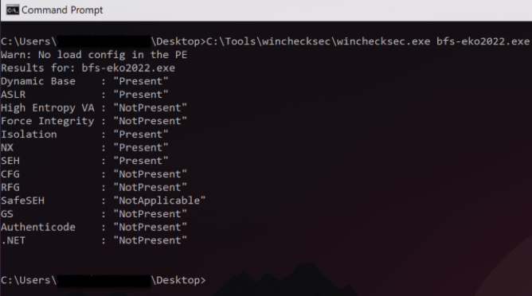
| ASLR | Cambia las direcciones de memoria en cada ejecución |
| DEP | Evita ejecutar shellcode en el Stack |
| GS | Detecta desbordamientos que sobrescriben el retorno |
Análisis
Lo primero es lo primero, así que vamos a ejecutar el binario y vemos que levanta un servicio socket en algún puerto.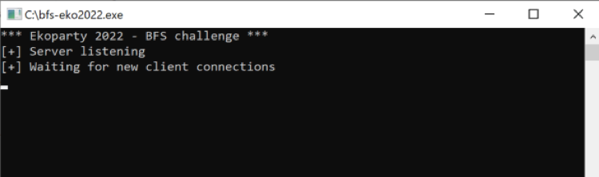
Utilizamos Process Hacker y en la pestaña Network filtramos por el nombre del binario y vemos que el servicio corre en el 31415. Esta es la manera mas fácil de identificar el puerto. Otra forma seria reversando y ver los parámetros de la función listen(), pero para que nos vamos a complicar.
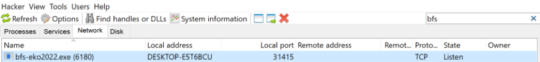
Ya con esto creamos la primera estructura del script para que se comunique con el servicio. Este lo utilizaremos mas adelante en el análisis dinámico, por ahora vamos a ir reconociendo el flujo de forma estática.
Viendo el código identificamos primeramente la función main(), donde aquí se ejecutan las siguientes acciones que levantan el servicio y realiza algunas comprobaciones de los datos enviados.
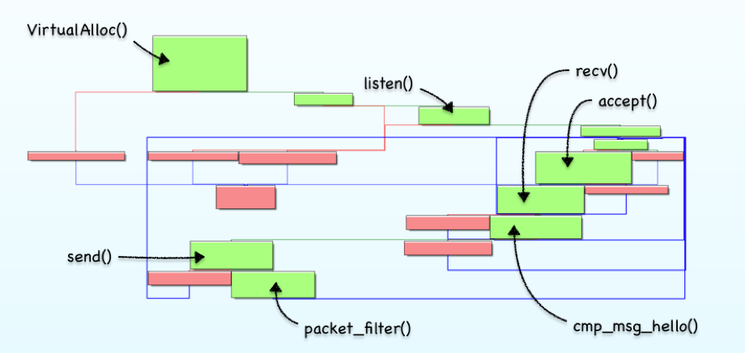
Lo mas importante de aquí es cmp_msg_hello() que se encarga de comparar los bytes recibidos con una constante llamada "Hello", si es así sigue el camino correcto al send() para responder con un "Hi" mediante la conexión socket y poder llegar a la función packet_filter().
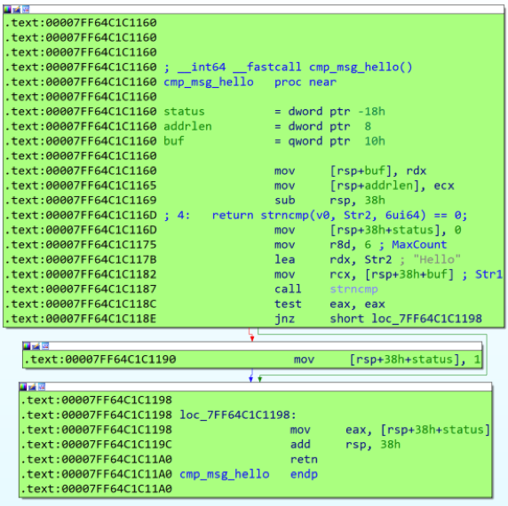
Ahora vemos las rutinas de packet_filter(), es aquí donde se encuentran las vulnerabilidades y donde hay que pensar.
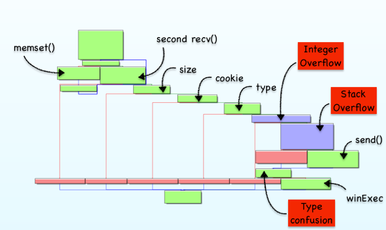
Cuando entra a la función se ejecuta una especie de memset() sobre el buffer de virtualAlloc(), modificando los bytes existentes por unos definidos por el binario (5050505050… y CF58585858…) los que tienen un propósito.
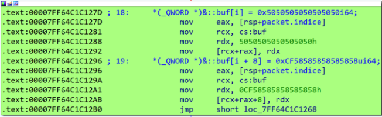
El segundo recv() recibe una especie de cabecera de paquete que será utilizado para distintas validaciones como tamaño, cookie y el tipo.
1. size valida que la cabecera sea menor o igual a 11 bytes de tamaño
2. cookie valida que se envié la cadena Eko2022
3. type valida que se envié el carácter "T"
4. Integer Overflow es un valor que pertenece a la cabecera llamado size y debe ser menor a 0x0F00 que en decimal es 3840
Aquí podemos ver que existe una comparación con signo, el cual nos permite explotar la vulnerabilidad de Integer Overflow enviando un valor negativo que pronto será interpretado como positivo.
Entonces si en el valor size de la cabecera enviamos 0xFFFF esto será transformado a 0x0000FFFF el cual es negativo y menor a 0x0F00 logrando la evasión de comparación.
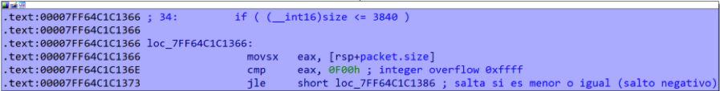
Cuando se logra la evasión entramos a llama otro recv() pero con un tamaño que controlamos, en este caso seria el word del valor negativo 0x0000FFFF y los bytes serán copiados a un buffer ubicado en el heap.
Seguido se hace una llamada a la función renombrada como copy_data_heap_to_stack() con los argumentos.
| len | Es el tamaño devuelto por el recv() |
| buf | Es el buffer de heap |
| cmdLine | Es un buffer de stack de 3840 bytes |
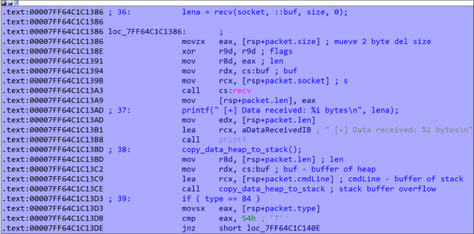
Dentro de copy_data_heap_to_stack() tenemos una rutina que realiza una copia byte a byte desde el buffer heap al buffer stack, mediante un ciclo for() utilizando como size el 0xFFFF, provocando un desbordamiento de buffer de stack. Ahora lo importante es poder controlar registros o variables de stack que nos permitan seguir con la ejecución, para eso es necesario enviar bytes de tamaño controlado para poder modificar el valor del tipo y poder llegar a winExec().
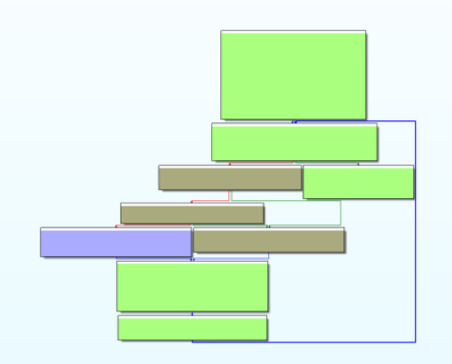
Antes de llamar a winExec() se realiza un desplazamiento dentro del buffer y esos bytes son movidos al registro rax el que pisa la dirección de winExec(), por lo tanto no se podrá utilizar la función para ejecutar código. Por ultimo se realiza la llamada.
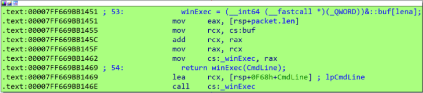
Si recuerdan en la función memset() se modifican los bytes del buffer con 5050505050 y CF58585858. Ahora con el desplazamiento dentro del buffer mas 7 bytes, nos posicionamos justo en los 5050505050. Entonces cuando se realiza la llamada a winExec() llegamos a los 5050505050, los que se transforman en "pop rax" permitiendo hacer pop al stack y tomar el control del retorno que serian nuestras A's con iret.
Para esto veremos los pop rax y validamos con la información del stack.
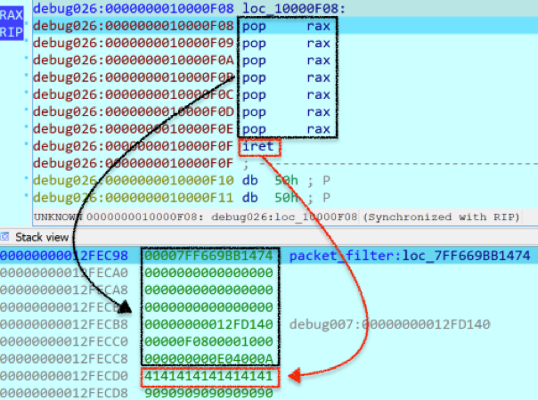
Con el siguiente código se comprueba los explicado anteriormente.
Ahora ya estamos casi al final del reto, pero para lograrlo hay que solucionar el problema de iret ya que demás de la dirección de retorno (EIP/RIP) ubicada en el stack, también necesita otros argumentos.
El iret es una instrucción que generalmente se llama desde el código del kernel antes de regresar a un proceso de espacio de usuario.
Referencias sobre iret y segmentación Intel:
https://www.inventati.org/nophear/download_tesi.pdf
http://jamesmolloy.co.uk/tutorial_html/10.-User Mode.html
https://nixhacker.com/segmentation-in-intel-64-bit
https://www.malwaretech.com/2014/02/the-0x33-segment-selector-heavens-gate.html
Por hora lo que debemos lograr hacer es un Fake iret Frame en el stack, y debe contener los siguientes parámetros.
| EIP | The instruction to continue execution at – the value of EIP |
| CS | The code segment selector to change to |
| EFLAGS | The value of the EFLAGS register to load |
| ESP | The stack pointer to load |
| SS | The stack segment selector to change to |
• EIP es la dirección del inicio del buffer ubicado en el heap en 0x10000000 donde tenemos nuestra data. Pero le daremos un desplazamiento para evitar cualquier tipo de problema quedando en 0x10000014.
• CS indexa la Global Descriptor Table (GDT) con su descriptor code/data en kernel (ring0) y user (ring3).
• EFLAGS lo podemos obtener con windbg o x64dbg en el registro afl.
• ESP es una dirección en medio del buffer ubicado en el heap, pero debe estar por debajo de la shellcode y tampoco debe ser el final como 0x10000600.
• SS indexa la Global Descriptor Table (GDT) con su descriptor code/data en kernel (ring0) y user (ring3).
Una manera fácil de obtener el valor de EFLAGS es mediante el registro efl, que se puede visualizar con el depurador windbg o IDA.
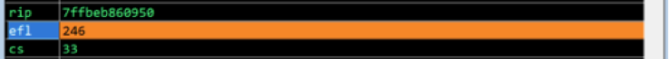
Ahora vamos a calcular el valor de CS y SS, ya que son los mas difícil de obtener.
Cuando se configura el GDT se configuran 5 selectores. Estos índices entre Kernel y usuario tiene un tamaño de 16 bytes y entre code y data por cada modo es de 8 bytes, por lo que los índices del selector son:
• 0x00: Null Descriptor
• 0x10: Kernel Code Segment (Kernel Mode - ring0)
• 0x18: Kernel Data Segment (Kernel Mode - ring0)
• 0x20: User Code Segment (User Mode - ring3)
• 0x28: User Data Segment (User Mode - ring3)
Entonces si queremos pasar a modo usuario (ring3) debemos configurar el RPL (Requested Privilege Level) o CPL (Current Privilege Level) que en este caso es 3. Para esto nuestro selector de "User Code Segment" será [0x20+0x3=0x23] y el selector de "User Data Segment" será [0x28+0x03=0x2b].
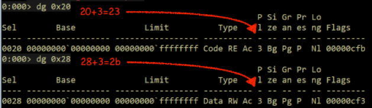
Ahora el gran problema que tenemos con el calculo de "User Data Segment", es que el 0x2b es modificado por un 0x00 al entrar a la función copy_data_heap_to_stack() y no se almacenara en el Stack, por ende debemos utilizar otro valor.
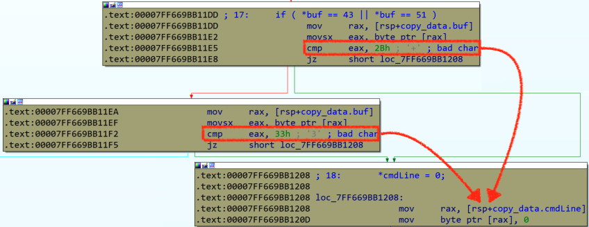
Para solucionar este problema se debe identificar un valor que pertenezca a data con permisos de lectura y escritura (Data RW) de manera que usando el comando en windbg dg 0x53 podemos ver la información.
Con todo armado ya podemos ejecutar y observamos como queda la estructura de parámetros para iret en el stack.
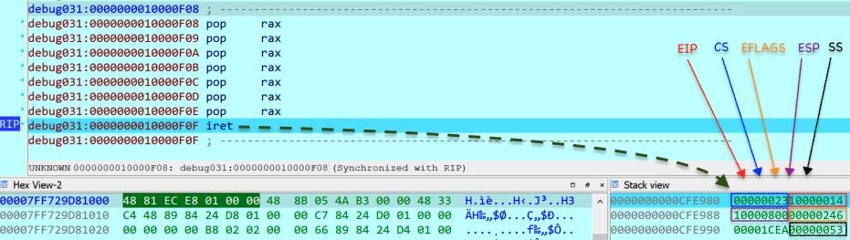
Valor de segmentos previo al salto iret CS 0x33:
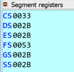
Valor de segmentos post al salto iret CS 0x23:
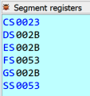
Por último, antes de ejecutar la shellcode solo nos quedaría restaurar el registro CS a 0x33 para volver a la arquitectura de 64-bits ya que al ejecutar iret nos deja en 32-bits. También restaurar el Stack que por suerte RCX apunta a ahí.
Podemos visualizar previo a la ejecución de iret como todo se mantiene a 64 bit.
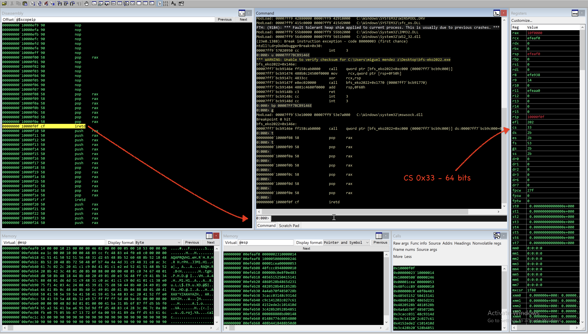
Ahora después de ejecutar iret todo cambia a 86 bits hasta los registros.
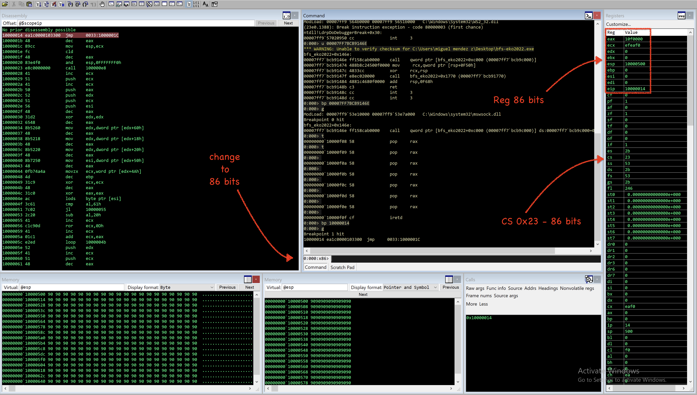
Para esto solo debemos agregar algunos bytes al inicio de la shellcode, así cuando se realice el salto se pueda restablecer a los valores antiguos y ejecutar la shellcode de 64 bits sin problemas.
Al usar un salto lejano como jmp 0x33:0x1000001C se especificará el "User Code Segment" con el valor 0x33, volviendo a 64 bits (Mas información aquí). Por ultimo los siguientes opcodes "\x48\x89\xCC" que seria un "MOV RSP, RCX" para restablecer el Stack. (Calcular opcodes online)
Explotación
El siguiente script es el exploit final en Python.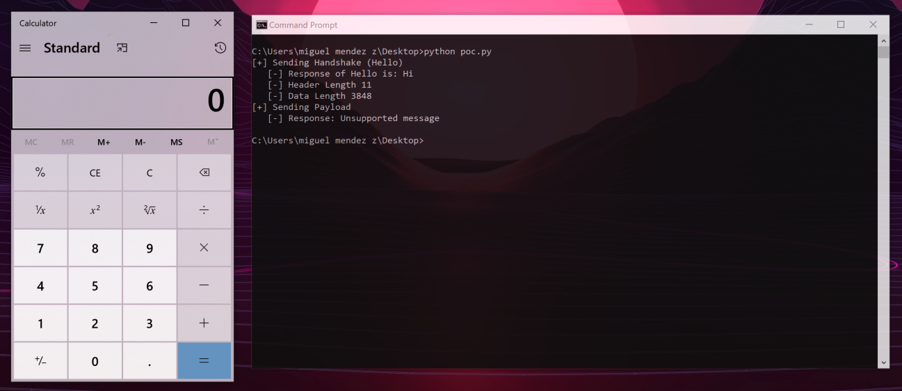